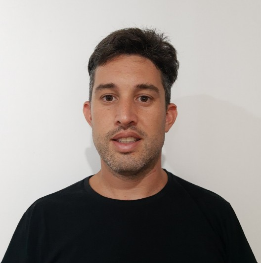
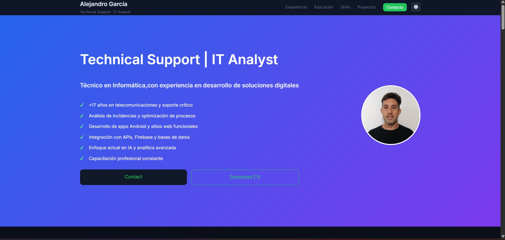

Técnico en Informática con experiencia en desarrollo de soluciones digitales, con formación en tecnología, contabilidad, finanzas y auditoría, orientado a la mejora continua y la innovación tecnológica.

Telecom Personal Argentina
2025 - ActualidadHabilitación y configuración de equipos, gestión sobre cajas FLOW multitecnología, soporte en Salesforce Conext y escalamiento de incidencias a segundo nivel.
Telecom Personal Argentina
2024 - 2025Análisis de incidentes en redes HFC / FTTH, asegurando derivaciones precisas y resolución eficiente.
Telecom Personal Argentina
2020 - 2025Soporte en tiempo real a técnicos, configuración de equipos y validación de red.
Telecom Personal Argentina
2015 - 2020Soporte en infraestructura de red y capacitación en despliegue FTTH.
Telecom Personal Argentina
2008 - 2015Atención al cliente y gestión administrativa en sistemas corporativos.
Universidad Católica de Santa Fe
En curso 2026Universidad Nacional del Litoral
Finalizado 2025Universidad Católica de Santa Fe
Pausado (32/38 materias)Instituto San Roque
FinalizadoSalesforce, Field Service Management, Huawei U2000, AMS5520 Alcatel, Intraway, ICD, TAU, Toolbox, Itickets, CCIP, ServAssure NXT, Symphonica, SAM, WatchDog, Tambo, Smart, SAP.
MySQL, Android Studio, HTML, Java, JavaScript, CSS, Python, Docker, Apache NetBeans, Eclipse PHP, Visual Studio Code, Firestore, Firebase, APIs, WordPress, GitHub, Postman, Excel avanzado, Power BI, Tango Gestión.
Google Workspace, Slack, Looker, Canva, Bootstrap, Jira, Confluence, Microsoft Teams.
Vanderbilt University – Coursera
2025Cisco Networking Academy
202560 horas - Secretaría de Trabajo
Universidad Complutense de Madrid
CESSI
Desarrollo de sitio web orientado a crear un Curriculum Vitae o Portfolio Web estilo Silicon Valley con muestra de enlace a proyectos, estudios y experiencias. Modo oscuro disponible.
Ver código en GitHub
Desarrollo de sitio web orientado a instituciones educativas. Proyecto final de carrera. Universidad Nacional del Litoral.
Ver código en GitHubDesarrollo de aplicación para gestión de actividades en campamentos en Android Studio.
Ver código en GitHubDesarrollo de aplicación para gestión educativa en Android Studio.
Ver código en GitHubDesarrollo de sitio web relacionado al turismo en Punta del Este (UY) en plataforma WordPress.
Ver sitio web